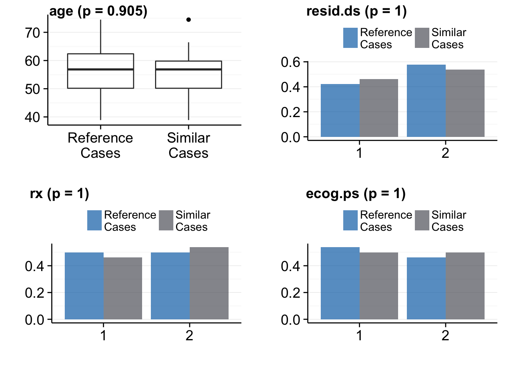

Cox-Beta Model
1 Initialization
In the first example, we use the Cox-Model and the ovarian data set from the survival package. In the first step we initialize the R6 data object. The initialization needs several inputs:
Arguments:
| learning | data set for learning the Cox model |
| verumData | Verum data set. For each case in the verum data, we are looking for the m (=1,…,k) similar cases. Learning and verum data set need the same structure (variable names and scales) |
| learnVars (optional) | A character vector variable names. This variables are used for learning the model. Do not include time2event and event variable here. Default: all variables, except endPoint variables, are used for model fitting. |
| endPoint (optional) | A character vector of length two. The first elements contains the variable name of the time 2 event variable and the second the name of the event variable. Default: c("Time2Event", "Event") |
| impute (optional) | TRUE/FALSE: Missing value imputation. Actually, not implemented for the Cox Model. |
library(survival)
library(cbr)
# all variables should be numeric or factor
ovarian$resid.ds <- factor(ovarian$resid.ds)
ovarian$rx <- factor(ovarian$rx)
ovarian$ecog.ps <- factor(ovarian$ecog.ps)
# initialize R6 object
sc <- cbrCoxModel$new(learning=ovarian, verumData=ovarian, learnVars=c("age", "resid.ds", "rx", "ecog.ps"), endPoint=c("futime", "fustat"), impute=F)## Dropped cases with missing values: 0
## Dropped cases with missing values: 0If impute is set to FALSE (for the Cox model the ìmpute variable is always set to FALSE) then all cases with missing values in the learning and end point variables are dropped (na.omit) and the reduced data set without missing values is saved internally. You get a text output on how many cases were dropped. The variables should be numeric or factor.
2 Similar Cases
After the initialization, we may get for each case in verum data the most similar case from the learning data.
sc$getSimilarCases(nCases = 1)## Start caclulating similar cases...
## Start learning...
## Learning finished in: 0.03 seconds.
## Similar cases calculation finished in: 0.04 seconds.You may extract then the similar cases and the verum data and put them together:
verum <- sc$getVerumData()
verum$group <- "Verum"
simCases <- sc$simCases
simCases$caseId <- NULL
simCases$group <- "Similar Cases"
df <- rbind(verum, simCases)Note 1: In the initialization step, we dropped all cases with missing values in the variables of learnVars and endPoint. The function sc$getVerumData() returns the data set without the cases with missing values in the learning vars, except in the randomForest model where you have the option to impute missing values.
Note 2: The data.frame returned from sc$simCases has an additional column caseId. By this column you may map the similar cases to cases in verum data, e.g. if you had chosen nCases = 3, then the first three elements in the column caseId will be 1 (following three 2 and so on). This means that this three cases are the three most similar cases to case 1 in verum data.
2.1 Check Linearity and Proportional Hazard Assumption
There are two functions for checking on the linearity of any independent numeric variable and the proportional hazard assumption for all dependent variables. Actually, it is not able to correct for non-linearity in the distance calculation.
pp <- sc$check_linearity()
pp
pp <- sc$check_ph()
pp
2.2 Validation of the matching Variables
You may want to check the distibution of the learnVars variables of the verum and similar cases data set:
pp <- sc$validate()## Two-sample Wilcoxon test for variable: age; p = 0.905
## Chi-Square test for variable: resid.ds; p = 1
## Chi-Square test for variable: rx; p = 1
## Chi-Square test for variable: ecog.ps; p = 1pp
The function sc$validate() returns an gg and ggplot object.
3 Distance Matrix
Alternatively, you may just be interested in the distance matrix, then you go this way:
sc <- cbrCoxModel$new(learning=ovarian, verumData=ovarian, learnVars=names(ovarian)[-c(1, 2)], endPoint=c("futime", "fustat"), impute=F)## Dropped cases with missing values: 0
## Dropped cases with missing values: 0sc$getFullDistanceMatrix()## Start learning...
## Learning finished in: 0.02 seconds.
## Start calculating distance matrix...
## Distance matrix calculation finished in: 0 seconds.sc$getFullDistanceMatrix() calculates the full distance matrix. This matrix the dimension: cases of learning data versus cases of verum data. In the above example we used the same data set for learning and as verum data. Such case can also be achieved by:
sc <- cbrCoxModel$new(learning=ovarian, learnVars=names(ovarian)[-c(1, 2)], endPoint=c("futime", "fustat"), impute=F)
sc$getFullDistanceMatrix()The distance matrix is saved internally in the sc object: sc$distMat.